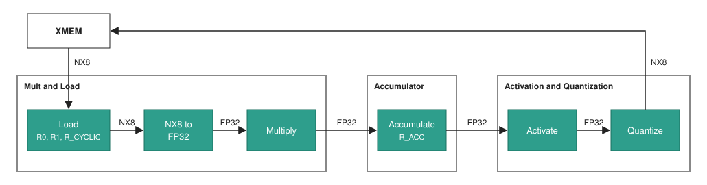

IPU¶
1. Overview¶
The IPU (Inference Processing Unit) is a VLIW vector processor that runs neural-network kernels. It performs the following tasks:
- Control: Runs one word per clock cycle.
- Memory access: Reads and writes XMEM rows.
- Compute: Processes one 128-element vector per word.
- Host control: Takes kernels, commands and debug accesses from the host.
Table of Contents¶
- Overview
- Block Diagram
- Interfaces
- Architectural State
- Instruction Word
- Pipeline and Timing
- 6.1 Stages
- 6.2 Execution Model
- 6.3 Register Read Timing
- Data Flow
- 7.1 NX8 Element Format
- 7.2 Row Layout
- CR Formats
- 8.1 Quantization Format (
qf) - 8.2 Data Structure (
ds) - 8.3 Active Elements
- 8.4 NX Constant
- 8.5 Signed Integer
- 8.1 Quantization Format (
- Memory Model
- Execution Flow
- Arithmetic Events
- Host Control and Debug
- Parameters
- Disagreements with the Emulator
2. Block Diagram¶
block-beta
columns 7
RISCV["RISC-V"] space XMEM["XMEM"] space:4
space:7
CTRL["Control"] space MULT["Mult and Load"] space ACC["Accumulator"] space AAQ["Activation and<br>Quantization"]
RISCV --> XMEM
RISCV --> CTRL
XMEM --> MULT
CTRL --> MULT
MULT --> ACC
ACC --> AAQ
AAQ --> XMEM
classDef ext fill:none,stroke:#888
classDef blk fill:#2e9e8c,stroke:#1a7060,color:#fff
class RISCV,XMEM ext
class CTRL,MULT,ACC,AAQ blk| Block | Role | Defined in |
|---|---|---|
| RISC-V | The host. Loads kernels, and controls and debugs the IPU. | Section 12 |
| XMEM | The IPU's external memory. | Cache Unit Specification |
| Control | Holds the PC, the IMEM banks, the CR banks and the LR file. Fetches words, resolves branches and operand values, and executes the LR slots. | Control Stage ARCH |
| Mult and Load | Loads XMEM rows and multiplies vectors. | MULT Stage ARCH |
| Accumulator | Combines the multiply result into R_ACC. |
ACC Stage ARCH |
| Activation and Quantization | Activates and quantizes a vector, and writes it to XMEM. | AaQ Stage ARCH |
3. Interfaces¶
| Interface | Peer | Description |
|---|---|---|
| Host | RISC-V | Kernel load, commands, status and debug, and one interrupt line. |
| Load | XMEM | One row per word (section 7.2). |
| Store | XMEM | One row per word (section 7.2). |
Note: The IPU has one clock and one reset.
4. Architectural State¶
| State | Size | Owner | Host access |
|---|---|---|---|
| PC | log2(IMEM_BANK_DEPTH) bits |
Control | Read. Write in HALTED. |
| IMEM | 2 banks of IMEM_BANK_DEPTH words |
Control | Write while the context is unlocked. |
CR0-CR15 |
2 banks of 16 registers of 32 bits | Control | Read. Write while the context is unlocked. |
LR0-LR15 |
16 registers of 32 bits | Control | Read |
LRD0, LRD2, ..., LRD14 |
8 pairs of LRs, 64 bits each. No added storage (section 4.2). |
Control | Through LR0-LR15 |
R0, R1 |
128 elements of 8 bits, each with a metadata word | Mult and Load | None |
R_CYCLIC |
512 elements of 8 bits, with a metadata word per 128-element slot | Mult and Load | None |
R_MASK |
8 slots of 128 bits | Mult and Load | None |
R_ACC |
128 elements of 32 bits | Accumulator | None |
| LUT | 256 entries of 17 bits and a 46-bit metadata block | Activation and Quantization | None |
Note:
CR0reads as0andCR1reads as1in both banks.
4.1 CR and LR¶
A CR and an LR each hold 32 bits. Both are little-endian: byte 0 is the
least significant byte.
| Byte | Bits | CR half |
|---|---|---|
3 |
[31:24] |
CRn.H |
2 |
[23:16] |
CRn.H |
1 |
[15:8] |
CRn.L |
0 |
[7:0] |
CRn.L |
The program writes an LR only through the LR slot.
4.2 LRD¶
LRDn is a 64-bit pair of LRs, {LR(n+1), LR(n)}, and n is even. The name
comes from the lower register. An LRD has no storage: a read or a write of
LRDn is a read or a write of LR(n) and LR(n+1).
An LRD is little-endian. It holds 8 elements of 1 byte, and element k is
byte k of the pair:
| Bytes | Bits | Register |
|---|---|---|
7-4 |
[63:32] |
LR(n+1), bytes 3-0 |
3-0 |
[31:0] |
LR(n), bytes 3-0 |
5. Instruction Word¶
A hardware word is 169 bits, with these slots:
| Slot | Count | Stage | Instructions |
|---|---|---|---|
COND |
1 | Control | BEQ, BNE, BLT.S, BGE.S, BR, HALT |
LR |
3 | Control | SET, ADD, SUB, INC.MODP2, INC, DEC, ADDB, ADDBI |
LOAD |
1 | Mult and Load | LD.MULT, LD.MULT.CYCLIC, LD.MASK |
MULT |
1 | Mult and Load | MULT.RC.VV, MULT.RC.VE, MULT.RC.VS, MULT.VE, MULT.EE |
ACC |
1 | Accumulator | ACC.ADD, ACC.SUB, ACC.MAX, ACC.STRIDE, AGG.SUM, AGG.MAX, ACC.RESHAPE and their .FIRST variants |
AAQ |
1 | Activation and Quantization | LD.LUT, ACTIVATE.QUANTIZE |
instruction_spec.py is
the source of the opcodes and the fields.
Word rules.
LD.LUTand aLD.*of theLOADslot cannot share a word.- Control resolves every CR and LR operand.
HALTis the last word of a kernel. The other slots of that word execute.
6. Pipeline and Timing¶
6.1 Stages¶
One word moves through four stages, in this order: Control, Mult and Load, Accumulator, Activation and Quantization.
The IPU starts one word per clock cycle. Control stalls on an XMEM miss. A stall changes no result.
6.2 Execution Model¶
Each word executes atomically. The state after a word equals the state from
executing its slots in this order: COND and LR, LOAD, MULT, ACC,
AAQ.
6.3 Register Read Timing¶
A cycle here is the execution of one word.
| Reader | Register | Value read |
|---|---|---|
COND, LR |
LR, CR |
Start of the cycle. |
LOAD, MULT, ACC, AAQ |
LR operands |
End of the cycle. |
MULT |
R0, R1, R_CYCLIC, R_MASK and their metadata |
Start of the cycle. |
ACC |
MULT_RES |
End of the cycle. |
AAQ |
R_ACC |
End of the cycle. |
7. Data Flow¶

| Point | Format | Size |
|---|---|---|
| XMEM row | NX8 | 128 elements of 8 bits and a metadata word |
R0, R1, R_CYCLIC |
NX8 | Section 4 |
| Multiply result | FP32 | 128 elements |
R_ACC |
FP32 | 128 elements |
| Activated elements | FP32 | 128 elements |
| Stored row | NX8 | 128 elements of 8 bits and a metadata word |
The Mult and Load stage converts each NX8 element to FP32 (section 7.1). The Activation and Quantization stage quantizes each activated element to NX8 (AaQ Stage ARCH, section 4.3.2).
7.1 NX8 Element Format¶
An element is 8 bits, packed from the MSB as {S?, Exp, M, 0-pad}:
| Field | Width | Present when |
|---|---|---|
S |
1 bit | sign = 1 |
Exp |
fe bits |
Always |
M |
fm = W - fe - sign bits |
Always |
0-pad |
The rest of the 8 bits | W < 8 |
Value. With the block scale s (8-bit e8m0):
Emax = 2^fe - 1
if sign = 1 and Exp = Emax and M = 0: // NaN code
fp32 = NaN
else if Exp < Emax: // direct
fp32 = (-1)^S x 2^(s - 127 - Exp) x (1 + M / 2^fm)
else: // clamp
fp32 = (-1)^S x 2^(s - 127 - (Emax - 1)) x (M / 2^fm)
Special values. NaN is -0, so it exists only in a signed format:
| Value | S |
Exp |
M |
|---|---|---|---|
0 |
0 |
2^fe - 1 |
0 |
NaN (-0) |
1 |
2^fe - 1 |
0 |
inf |
0 |
0 |
2^fm - 1 |
-inf |
1 |
0 |
2^fm - 1 |
For example, the NaN code of signed e4m3 is 0xF8.
TBD - ask Jacob: is the largest magnitude the right NX8 code for
infand-inf? With this code, the value above reads back finite. For comparison, two 8-bit floating-point formats:
Format infLargest finite value Notes e5m2Yes: inf,-infandNaN±57,344A value cast beyond the maximum becomes infor-inf. Used for gradients and intermediate ranges that need a wider dynamic range.e4m3No ±448The codes that IEEE formats give to infhold more finite numbers, for higher precision up to the maximum.
7.2 Row Layout¶
| Field | Size | Position |
|---|---|---|
| Elements | 128 x 8 bits | Element i is byte i of the row. |
scale |
8 bits | Metadata bits [7:0]. Scale shared by the whole vector. |
dynamic_exponent |
1 bit | Metadata bit [8]. e1 or e2: the exponent width chosen in dynamic quantization. 0 in static quantization. |
Metadata bits [15:9] are not used.
8. CR Formats¶
These formats apply to every stage that reads them.
8.1 Quantization Format (qf)¶
The qf operand names a 16-bit half of a CR: CRn.L (bits [15:0]) or
CRn.H (bits [31:16]).
| Bits | Field | Description |
|---|---|---|
[15:12] |
dynamic |
0 = static, 1 = dynamic. |
[11:8] |
sign |
0 = unsigned, 1 = signed. |
[7:4] |
exp_format |
Exponent width fe of a static format: 1-7 = e1-e7. fe + sign is at most num_bits. |
[3:0] |
num_bits |
Total element width W: 1-8. |
Exponent width fe:
dynamic |
fe |
|---|---|
0 |
The exp_format value. |
1 |
1 if dynamic_exponent = 0, 2 if dynamic_exponent = 1. |
A dynamic format allows any sign and any num_bits >= 2 + sign.
8.2 Data Structure (ds)¶
The ds operand names a 16-bit half of a CR (CRn.L or CRn.H).
| Bits | Field | Description |
|---|---|---|
[15:12] |
valid_partitions |
Number of valid groups: 1-num_partitions. The rightmost num_partitions - valid_partitions groups are masked. |
[11:10] |
mask_type |
The value the Mult and Load stage writes into masked elements. |
[9:8] |
num_partitions |
Number of groups, coded 0-3 = 1, 2, 4, 8. One group is one line of 128 elements, two groups are two lines of 64 elements. |
[7:0] |
valid_elements |
Number of valid elements in a group: 0-128 / num_partitions. |
mask_type |
Pad value |
|---|---|
0 |
0 |
1 |
+inf |
2 |
-inf |
3 |
NaN |
8.3 Active Elements¶
The 128 elements are split into num_partitions equal groups:
- Only the first
valid_partitionsgroups are active. - In each active group, only the first
valid_elementselements are active.
group_size = 128 / num_partitions
active[i] = (i / group_size < valid_partitions) and (i % group_size < valid_elements)
Example: num_partitions = 4, valid_partitions = 3, valid_elements = 10.
Each group has 32 elements, so active elements are 0-9, 32-41 and 64-73
(30 elements). Group 3 (96-127) is masked.

8.4 NX Constant¶
A CR that holds an NX-type floating-point value:
| Bits | Field | Description |
|---|---|---|
[31:24] |
N/A |
Not used. |
[23:20] |
sign |
0 = unsigned, 1 = signed. |
[19:16] |
exp_format |
Exponent width fe: 1-7 = e1-e7. fe + sign is at most 8. |
[15:8] |
scale |
The scale of value, e8m0. |
[7:0] |
value |
The NX8 element (section 7.1): 8 bits wide, static. |
The constant converts to FP32 as in section 7.1, with num_bits = 8. CR0 is
the constant 0.0 and CR1 is the constant 1.0.
8.5 Signed Integer¶
A CR that holds an integer is 32 bits in two's complement. An LR or COND
operand that names a half (CRn.L or CRn.H) reads it sign-extended.
9. Memory Model¶
Every XMEM access names a base CR and an offset LR:
| Field | Bits | Meaning |
|---|---|---|
table_id |
4 | Table that holds the array. |
offset |
20 | Row in the table. |
10. Execution Flow¶
The IPU has two contexts. Each one holds an IMEM bank, a CR bank and a table set. The host loads a kernel into the inactive context.
| Run state | Meaning |
|---|---|
IDLE |
No kernel runs. |
RUNNING_UNARMED |
A kernel runs. No kernel is armed. |
RUNNING_ARMED |
A kernel runs. The kernel in the inactive context starts when it is done. |
HALTED |
The kernel stands at a word boundary. |
Reset enters IDLE in context 0 with PC 0.
Example: three kernels. Configure means writing the IMEM bank, the CR bank and the table set of the inactive context.
sequenceDiagram
participant H as RISC-V
participant I as IPU
Note over I: IDLE, context 0 active
H->>I: Configure context 1 with kernel 1
H->>I: ARM
Note over I: Kernel 1 runs in context 1
I-->>H: KERNEL_START
H->>I: Configure context 0 with kernel 2
H->>I: ARM
Note over I: Kernel 1 done<br/>Kernel 2 runs in context 0
I-->>H: KERNEL_DONE, KERNEL_START
H->>I: Configure context 1 with kernel 3
H->>I: ARM
Note over I: Kernel 2 done<br/>Kernel 3 runs in context 1
I-->>H: KERNEL_DONE, KERNEL_START
Note over I: Kernel 3 done<br/>IDLE
I-->>H: KERNEL_DONEExecution flow defines the commands and the state transitions.
TBD - ask Aviv: after the
HALTinstruction retires, does the kernel end (the IPU goes toIDLE, or the armed kernel starts), or does the IPU enterHALTED(OQ-31)?
11. Arithmetic Events¶
Accumulator overflow, NaN results and quantization saturation are arithmetic
events. They never halt.
Arithmetic events defines them.
12. Host Control and Debug¶
The host loads kernels, issues commands and reads status through registers. An illegal host access returns an error and never disturbs a running kernel.
Host registers lists the registers, and Debug defines halt, step, breakpoints and register read-out.
13. Parameters¶
| Name | Value | Description |
|---|---|---|
NUM_ELEMENTS |
128 |
Elements in a vector. |
WORD_WIDTH |
169 |
Bits in a hardware word. |
REG_WIDTH |
32 |
Bits in a CR or an LR. |
IMEM_BANKS |
2 |
IMEM banks. |
IMEM_BANK_DEPTH |
1024 |
Words per IMEM bank. |
CR_BANKS |
2 |
CR banks. |
ROW_BYTES |
128 |
Element bytes in a row. |
TBD:
IMEM_BANK_DEPTHis the proposal of OQ-4.
14. Disagreements with the Emulator¶
The emulator's BREAK and AAQ_EXACT slots and its FP32 mode are emulator-only.
| Topic | Spec | Emulator |
|---|---|---|
| Contexts and run states | Section 10. | One program until HALT, with no contexts, run states or host registers. |
| XMEM miss | Control stalls. | No stall model. |
| Row address | table_id and offset (section 9). |
A flat row number, 0-16383 in NX8. A base CR with table_id bits set is out of range. |
| Dynamic format | Section 8.1. | Only sign = 1 and num_bits = 8. |
NaN in NX8 |
Section 7.1. | No NaN code. |
The stage-level differences are in section 5 of Control Stage ARCH, Multiply Stage ARCH, Accumulator Stage ARCH and AaQ Stage ARCH.